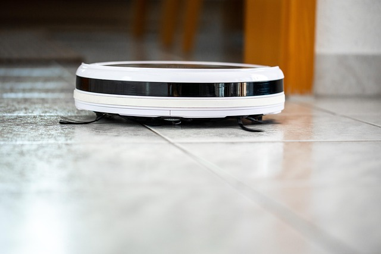

Aspiradora
La aspiradora es un electrodoméstico que se utiliza para limpiar superficies, como suelos y alfombras, mediante la succión de suciedad y polvo.

Teléfono
El teléfono es un dispositivo de comunicación que permite realizar llamadas y enviar mensajes a través de redes telefónicas.

Televisor
El televisor es un dispositivo electrónico que recibe señales de televisión y las convierte en imágenes y sonido para su visualización.